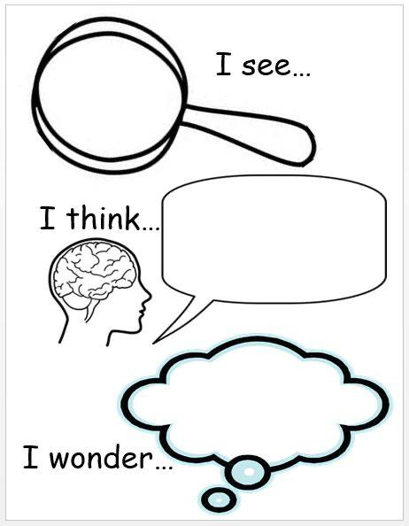

<div id="ajax-page" class="ajax-page-content">
    <div class="ajax-page-wrapper">
        <div class="ajax-page-nav">
            <!-- <div class="nav-item ajax-page-prev-next">
            </div> -->
            <div class="nav-item ajax-page-close-button">
                <a id="ajax-page-close-button" href="#"><i class="lnr lnr-cross"></i></a>
            </div>
        </div>

        <div class="ajax-page-title">
            <h1 style="float:right">التساؤل للوصول</h1>
        </div>

        <div class="row life">
            <center>
                <div class="col-sm-8 col-md-8 portfolio-block">
                    <div class="owl-carousel portfolio-page-carousel">
                        <div class="item">
                            
                        </div>
                    </div>

                    <!-- <div class="portfolio-page-video embed-responsive embed-responsive-16by9">
                    <iframe class="embed-responsive-item" src="https://www.youtube.com/embed/0pjhD5ySdPs"></iframe>
                </div> -->
                    <script type="text/javascript">
                        jQuery(document).ready(function ($) {
                            $('.portfolio-page-carousel').imagesLoaded(function () {
                                $('.portfolio-page-carousel').owlCarousel({
                                    smartSpeed: 1200,
                                    items: 1,
                                    loop: true,
                                    dots: true,
                                    nav: true,
                                    navText: false,
                                    margin: 10,
                                    autoHeight: true
                                });
                            });
                        });
                    </script>
                </div>
            </center>

            <div class="col-sm-12 col-md-12 portfolio-block conten">
                <!-- Project Description -->
                <div class="project-description">
                    <div class="block-title" style="float: right;">
                        <h3>التساؤل للوصول</h3>
                    </div>
                    <!-- <ul class="project-general-info">
                        <li>
                            <p><i class="fa fa-user"></i>mahmoud yousef</p>
                        </li>
                    </ul> -->

                    <center class="txt">
                        <span>
                            اقتناع مستمر بفكرة "العودة إلى الأصل" لإدراك حقيقة الأشياء ، لا تقيّم شئ من آخره أو من منتصف
                            أحداثه

                            ما أصل الحياة؟ لماذا نحن هنا؟ لماذا خُلقنا؟

                            قاعدة أساسية بديهية
                            كل شئ له سبب أو مجموعة أسباب ، لا يوجد شئ ظاهر أمامك بلا أسباب ، فكل شئ موجود ظهر بعد إكتمال
                            أسباب وجوده (القوانين الخاصة به نُفذت فأصبح واقع)
                            (لا توجد نتائج بلا مقدمات)
                            أنت شخصياً موجود فى الأرض لسبب

                            الأرض والسماء ، الجسد والنفس ، الكواكب ، النجوم والمجرات وكل شئ .. كلها موجودات لأسباب

                            الخوف نفسه نتيجة
                            له أسبابه التى أنتجته وأوجدته بداخلك

                            الخوف من التساؤل والتعمق فى الوجود هو نتيجة لهشاشة وضعف عقلى وظهور ساطع للطريقة التى نشأت
                            بها والتى كانت قائمة على مستوى علمى ضئيل أو الجهل

                            والعكس صحيح تماماً
                            الشجاعة والقوة نتيجة تساؤلك وتفكرك بصدق


                            نحن هنا حتى نتساءل باستمرار
                            العلم التجريبى (الأرضى) الحالى لم ينشأ إلا بالتساؤل
                            والبحث فيما وراء الأشياء
                            وكان ومازال المحرك هو (وجود النتيجة يعنى بالضرورة وجود أسباب ، فما هى؟ )
                            فكل شئ فى المجال العلمى هو نتاج (التفكر فى الأسباب خلف الأشياء)

                            مفهوم الفلسفة تقدر تبسطه وتحصره فى كلمة "التساؤل" ، وهو من أهم مجالات الحياة بالمناسبة .
                            فاتفلسف يا صديقى
                            وتقبل سفاهة الجهلاء الذين هم أكثر أهل الأرض حتى النهاية
                            وطالما متواجدين فمهم أن تبرمج عقلك على شيئان
                            (التقبل) + (التجاهل بسلام اللى هو بذكاء يعنى)
                            كلما كنت واعياً كلما كنت مُدرك كيف ومتى تتقبل وتتجاهل باحترافية .

                            الأصل هو الفطرة
                            لا يوجد إنسان لا يُدرك الحقيقة ، كل شخص يعرف جيداً طعم المشاعر الراقية والمشاعر السلبية
                            "بالفطرة"
                            من علم الطفل المولود البكاء والإبتسامة والتفاعل مع الأحداث المحيطة؟
                            هو نازل بالبرمجة الفطرية

                            فى أقصى مراحل العنف والإرهاب بتبقى الفطرة السليمة فى نفوس الأشخاص لكنهم بيكونوا فى حالة تشوه
                            عقلى نتيجة الأفكار التى زُرعت فى عقولهم وسلموا لها بلا تفكر وبلا عودة للأصل (الفطرة)

                            كلنا نعرف الحقيقة والزيف جيداً
                            الفكرة كلها فى التلوث العقلى اللى بيخلق ظلام بين العقل والفطرة ، فبيرى الشخص الزيف ويظنه هو
                            الحقيقة

                            كم من شخص نشأ فى مجتمعات يسودها الفقر والإحتياج الشديد (نشأ على أسبابهم) التى أنتجت حالاتهم
                            الفقيرة فأصبح يرى الحياة بهذه الأفكار
                            وحُجبت الرؤية لديه تجاه أشخاص خرجوا من بيئات مشابهة له حينما أخذوا بأسباب أخرى فتحولت
                            حالاتهم لأشكال أخرى متفاوتة فى الجانب الأفضل ؟

                            • وهنا تأتى أهمية التساؤل لهؤلاء الأشخاص
                            - لماذا نشأت فى هذا المجتمع فى حين أن هناك أطفال جاءوا فى مجتمعات راقية وحظوا بتعاليم عالية
                            الجودة وحياة أفضل بشكل عام؟
                            هذه أمور متعمقة بالنسبة لعقليات لم تعتاد على البحث والتساؤل ولن تأتى الإجابات إلى مع التطور
                            العقلى الذى هو نتيجة للتساؤل والبحث .

                            باستخدام القاعدة البديهية: (لكل نتيجة سبب أو أسباب)
                            أوتوماتيكياً سينشأ الشغف الداخلى تجاه العلم
                            أما وأن تتواكل وتتبع المخدرات الفكرية ستريح عقلك موقتاً
                            وستهلكك المشاكل فيما بعد ، والتى هى الجزاءات السيئة لعدم مواكبة نظام الحياة (التطور المستمر)

                            تلخيصاً وتأكيداً :
                            العشوائية نتيجة الجهل ، الجهل نتيجة البُعد عن التساؤل والتفكر (وأكثر الناس يعيشون الزيف فى
                            العالم أجمع)
                        </span>
                    </center>
                </div>
                <!-- Project Description -->
            </div>
        </div>
    </div>
</div>